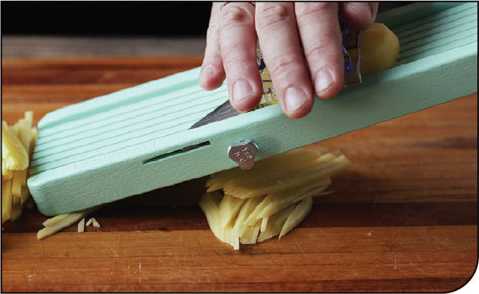
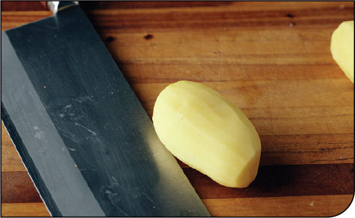
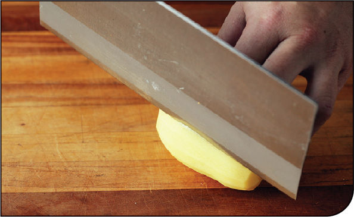
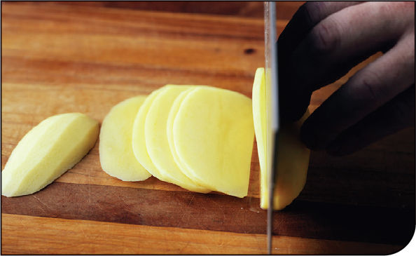
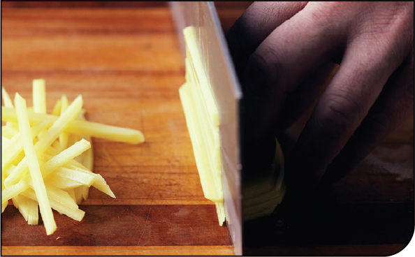

BLISTERED CUMIN AND MUSTARD CURRY SPICE BLEND
|
Yield Makes about ¼ cup |
Active Time 10 minutes Total Time 10 minutes |
INGREDIENTS
2 tablespoons (30 ml) peanut, rice bran, or other neutral oil
1 tablespoon (6 g) cumin seeds
1 tablespoon (6 g) black mustard seeds
2 tablespoons (18 g) curry powder, such as Sun Brand Madras Curry Powder or S&B Oriental Curry Powder
1 teaspoon (4 g) kosher salt
DIRECTIONS
1Heat the oil, cumin seeds, and mustard seeds in a wok over medium-high heat, stirring constantly until the seeds start to sizzle and pop, 1 to 2 minutes. Continue stir-frying until the popping starts to subside, then strain through a fine-mesh strainer set in a small heatproof bowl (you can save this oil for stir-frying or to use in dressings or drizzle on noodle soups). Transfer the seeds to a plate lined with a few layers of paper towels and blot out the excess oil.
2Combine the blistered cumin and mustard seeds with the curry powder and salt in a small bowl. Store at room temperature in a sealed container in a dark pantry for up to a year (smell it before using—as long as it smells good, it will taste good).
STIR-FRYING SHREDDED POTATOES
Potatoes cut into thin matchsticks, rinsed of excess starch, then stir-fried with aromatics is a dish found in both Sichuan cuisine (where it is called tudou si) and in Korean cuisine (where it is called gamjachae bokkeum).
The key lies in finely shredding and then soaking the potato in several changes of water until all of the starch is leached out. This process accomplishes two distinct goals. The first is more obvious: removing starch ensures that the potato strands don’t stick together or become gummy as they are stir-fried.
The second goal is less obvious. As it turns out, there are enzymes in potato cells that when released through shredding will interact with the pectin glue holding potatoes cells together, strengthening their structure with the help of calcium ions present in the potatoes and in your tap water. This interaction helps the potatoes stay firm and crunchy even when fully cooked, and that’s what gives these stir-fried potatoes their uniquely crisp texture. (Read more about this in “The Science of Rinsing Potatoes,” here.)
Korean shredded potatoes are a common banchan (side dish) and are wonderful served hot from the wok, at room temperature, or even straight from the fridge. It’s about as simple as stir-fries get: rinsed shredded potatoes quickly stir-fried in oil with some sliced onions and sometimes shredded carrots, finished with black pepper, roasted sesame oil, and sesame seeds. The Sichuan version is a little more complex with the addition of aromatics like Sichuan peppercorns, garlic, and dried chiles, along with a splash of soy sauce and vinegar for seasoning. Both dishes clock in at around 5 minutes once you’ve shredded and rinsed your potatoes (something that can be done by hand—see “How to Shred Potatoes for Stir-Fries” on here—but is much faster and easier with a mandoline), which makes stir-frying easily the fastest way I know to cook potatoes.
How to Shred Potatoes for Stir-Fries
The easiest way to shred potatoes for stir-fries is to use a mandoline or a food processor with a julienne attachment. For stir-frying, you’re looking for shreds around ⅛ inch wide. I use an inexpensive Japanese Benriner mandoline, the same exact model I’ve seen in every professional kitchen I’ve ever worked in. If your mandoline does not have a julienne attachment or if you’ve lost it (I always lose mine), you can still use your mandoline to make the first slices and get your potatoes into nice, even, ⅛-inch planks, at which point you can just go straight to step 4 below.

If you have neither a mandoline nor a food processor, don’t worry. A little practice and patience will get you there.
Step 1 • Peel and Trim

Peel your potatoes and rinse them so that the excess surface starch doesn’t make them slippery.
Step 2 • Create a Stable Surface

Cut one thin slice lengthwise off the side of the potato with a sharp chef’s knife to create a stable surface for the potato to rest on.
Step 3 • Cut into Planks

With the potato resting on its newly cut surface, use a sharp chef’s knife to cut the potato into ⅛-inch planks. (Alternatively, use a Japanese-style mandoline to slice the potatoes into ⅛-inch planks.)
Step 4 • Cut Matchsticks

Stack a few of the planks together and slice them lengthwise with your knife to create even matchsticks.